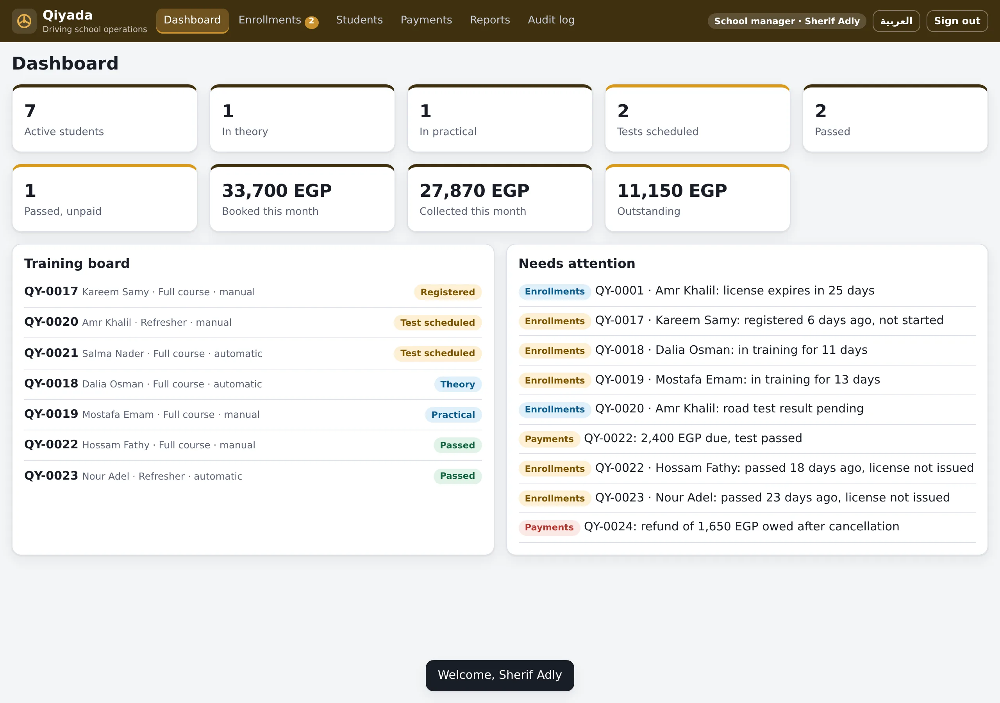
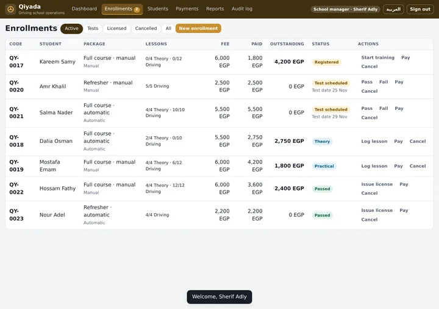
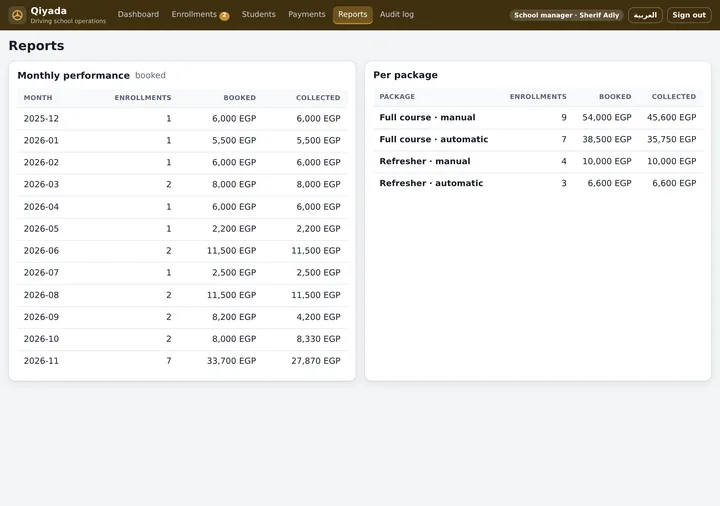
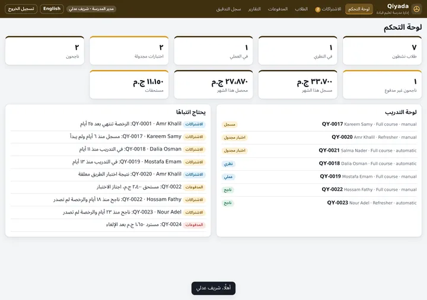
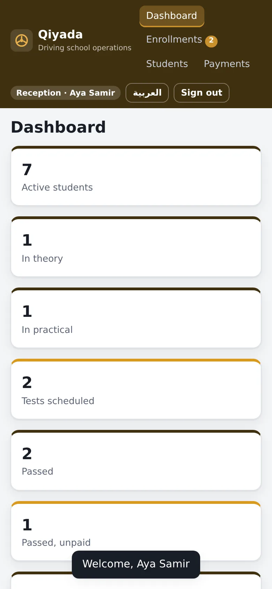

PORTFOLIO DEMO / BUILT / LIVE DEMO
Qiyada
Every student, lesson and payment, on one record. School operations the way a Cairo driving school actually runs them.

ACTUAL BUILDQiyada · School manager dashboard. Fictional school, students and enrollments.
The problem
A driving school runs on a register book and the instructor's memory. Nobody can say which lesson a student has reached once they leave the yard, the student who passed the road test last month is remembered when they call about their license, the balance a student still owes is reconciled from receipts when they return, and the argument about who paid for which package starts because nobody wrote it down in one place.
What was built
An operations system for one school with five roles. A student enrolls in a package; full courses start in theory lessons, refresher courses skip straight to driving. Lessons are logged per kind against the package's plan — a driving lesson needs a training car whose transmission matches the course, and no lesson can be dated in the future. Finishing theory moves the student to driving; completing the driving plan lets reception schedule the road test, never in the past. The examiner records the result: a fail returns the student to driving lessons, a pass makes them test-passed. Reception issues the license only once the balance is zero, and every license carries an expiry a year out. Cancelling is manager-only and flags any refund owed on the dashboard. The instructor sees course fees but never a payment or a balance; the examiner sees no money at all, not even fees — every amount is removed from the response on the server, not hidden on screen. The interface works in Arabic (right to left) and English, and on a phone.
What changes for the school
Before. The lesson count is remembered differently by the school and the student. The graduate whose license was never issued is found when they call. The balance a student still owes is assembled from receipt books, and the refund after a cancellation is settled by whoever argues better.
After. The dashboard names the registration that never started, the student stuck in training, the road-test result waiting to be recorded, the graduate unpaid or unlicensed for weeks, the license about to expire and the refund still owed after a cancellation. A license cannot be issued while a balance is open, and every student, lesson and payment sits on one record the team actually updates.
Why it matters to a school owner
A school's reputation sits in students moved along and licenses delivered, and its money sits in small balances that add up. When the enrollment, the lessons, the test result and the payment record come from the same file the team actually updates, nothing depends on one person's memory, and the license expiry is a date on a screen, not an argument. These are designed situations, not measured results from a real school.
The approach
No framework and no build step: plain JavaScript pages, one serverless API function and one logic file that holds every rule (theory before driving, driving before the test, the fail-and-retake loop, the issue-while-unpaid guard, the car-transmission match, the payment limits, license expiry windows, per-role views, the deterministic sample school). The same file runs in the API, the browser and the test suites. Permissions are enforced on the server on every operation, create operations carry idempotency keys so a retried request never enrolls a student or records a payment twice, and every action lands in an audit log the manager alone can read. What a role must not see is removed from the response on the server, not hidden on screen.
The result
A live demo anyone can open. Sign in as the school manager (PIN 1111), reception (2222), finance (3333), an instructor (4444) or the examiner (5555); the PINs are on the sign-in screen. The sample school has 10 students, 24 enrollments across a year of history and the current week from registered to licensed, four training cars, and 62 payments across twelve months, with one cancelled enrollment still owed a refund. Verification: 12 unit tests and 124 browser and API checks run to completion against the live site, covering forged tokens, malformed and oversized bodies, every role's permission lane, the complete enrollment lifecycle from registration to a passed, paid, licensed graduate, the stage and balance guards, the fail-and-retake loop, idempotency keys, the instructor and examiner never seeing money even on typed hash routes, XSS stored as text, Arabic RTL, phone-width layouts and zero page errors. The demo state resets itself roughly every six hours, so it always opens as the same working school.
Inside the build
Open any preview to see the full capture. Captures show demonstration content, not evidence of client use.



